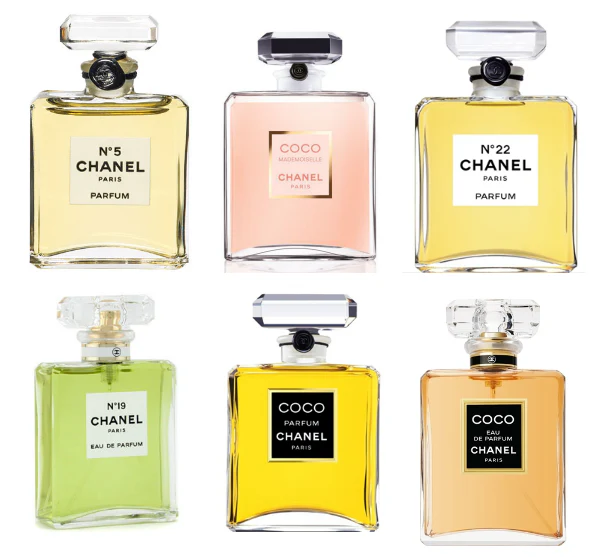

Parfum merupakan elemen penting dalam penampilan seseorang. Aroma yang tepat dapat meningkatkan rasa percaya diri dan meninggalkan kesan mendalam bagi orang di sekitar.
Brand terkenal seperti Chanel, Dior, dan Yves Saint Laurent terus menghadirkan inovasi aroma yang khas. Setiap produk memiliki karakter unik dan daya tahan berbeda.
Untuk mengetahui koleksi terbaru, kunjungi situs resmi Chanel.

| Chanel No. 5 – Elegan dan klasik |
| Dior J’adore – Feminim dan lembut |
| YSL Libre – Modern dan berani |